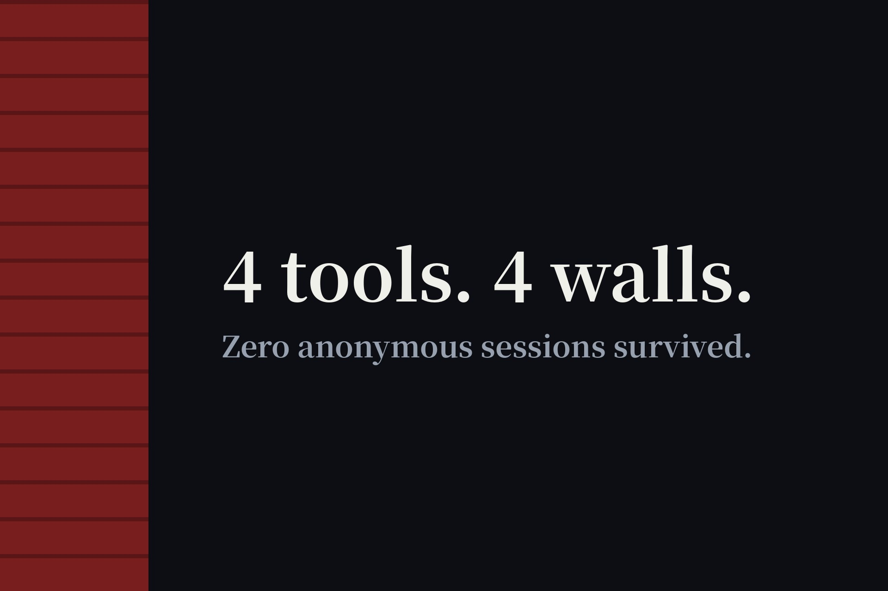

These 4 AI Tools Promise No Sign-Up. I Tested Every One. (2026)
People keep searching "c.ai no sign up" and "rizz ai free no sign up" hoping to dodge registration. So I opened Character.AI, Rizz, Writer, and Question AI in a private window as a logged-out visitor — no accounts, no emails, nothing created. Every single one demanded sign-up for its core features. One walled me on the landing page, one after a personality quiz, one after a single question. Zero of four made it into our directory.

The verdicts, up front
| Tool | Verdict | Where the wall appears |
|---|---|---|
| Character.AI | Sign-up required | Landing page — no anonymous entry exists |
| Question AI | Sign-up required | Second question — first answer is free, then hard login lock |
| Rizz AI | Sign-up required | After the free quiz — all AI features redirect to a pay page |
| Writer | Sign-up required | "Try for free" leads to a registration gate; only a side calculator is open |
Character.AI — the wall is the homepage
Fastest failure of the four. The landing page opens with a pitch about chatting with millions of characters "in ten seconds" — and the only buttons are Continue with Google, Apple, or email. Top nav offers "Sign up to chat" and "Log in." There is no guest mode, no demo conversation, no back door I could find. If you came here from a "c.ai no sign up" search: the answer is no, and it's not close.
Question AI — one free answer, then the lock
This one is sneakier. As an anonymous visitor I asked "What is the capital of France?" and got a correct answer instantly — no account, no friction. Then I asked a second question and hit an unskippable "Log in for more accurate answers" box (Google, Apple, or email plus code). Dismissing it left the question unanswered. So the real policy is one question per stranger, forever. That's not a free tier; it's a sample — the same funnel pattern I documented in the email-traps field notes.
Rizz AI — quiz yes, AI no
The main site is just an app download landing page with nothing usable on the web. The web version let me complete a 10-question personality quiz and view my result without signing up — genuinely free. But every core feature (AI reply suggestions, daily practice, openers, the growth plan) is locked, and clicking through lands on a payment page pushing a 7-day free trial that requires an account plus a payment method. The quiz is the teaser; the product is behind two walls, not one.
Writer — the platform is gated, one calculator isn't
Clicking "Try for free" on writer.com routes to a registration gate — no way to touch the actual writing platform without an account. The one thing I could use anonymously was their marketing ROI calculator, a standalone interactive tool, and even that asks for a work email to unlock the full report. A free calculator next to a walled product doesn't make the product no-signup. It stays out of the directory.
Why I publish failures, not just passes
A directory that only lists wins teaches you nothing about the misses everyone keeps searching for. These four tools collect real "no sign up" search volume, and the honest answer to all four queries is "no." That answer is more useful than another roundup pretending the wall doesn't exist — and it's the same standard that got Mage.space delisted. If any of these four ever opens a genuine anonymous tier, I'll re-test and update this page.
FAQ
Can you use Character.AI without signing up?
No. Character.AI's landing page is itself the registration wall — Google, Apple, or email sign-up is the only way in. There is no anonymous chat entry point.
Why do "one free try" tools count as sign-up walls?
Because the free taste exists to capture your account, not to serve you. Question AI answers exactly one question, then hard-locks the second behind login. The pattern is the same one documented in our email-traps field notes: the sample is the funnel.
Where can I find AI tools that are actually no-signup?
Our directory lists only tools that passed the same logged-out test these four failed — every listing was opened in a private window and used without an account.